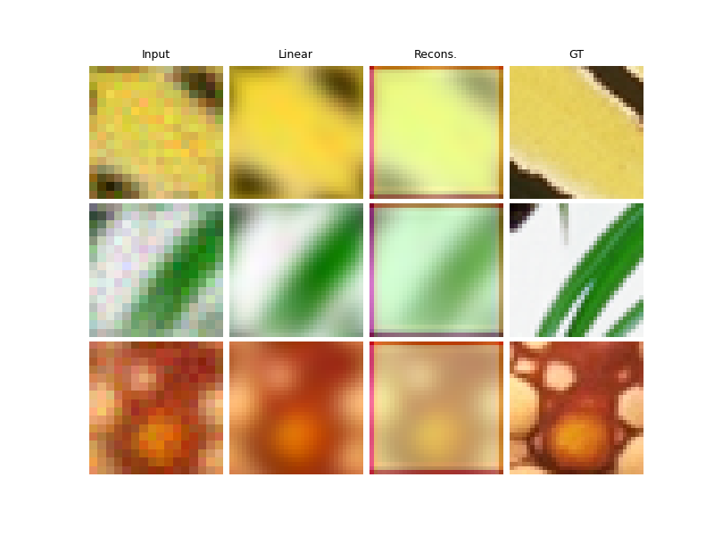
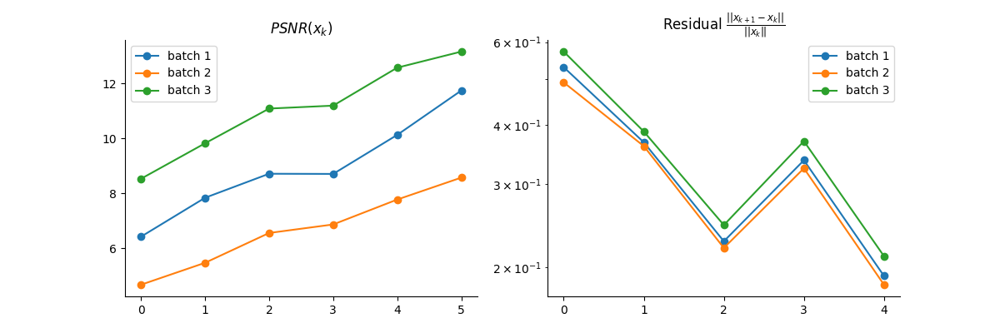

Note
Go to the end to download the full example code
Learned Primal-Dual algorithm for CT scan.
Implementation of the Unfolded Primal-Dual algorithm from
Adler, Jonas, and Ozan Öktem. “Learned primal-dual reconstruction.” IEEE transactions on medical imaging 37.6 (2018): 1322-1332.
where both the data fidelity and the prior are learned modules, distinct for each iterations.
import deepinv as dinv
from pathlib import Path
import torch
from torch.utils.data import DataLoader
from deepinv.unfolded import unfolded_builder
from deepinv.training_utils import train, test
from torchvision import transforms
from deepinv.utils.demo import load_dataset
from deepinv.optim.optim_iterators import CPIteration, fStep, gStep
from deepinv.models.PDNet import PrimalBlock, DualBlock
from deepinv.optim import Prior, DataFidelity
Setup paths for data loading and results.
BASE_DIR = Path(".")
ORIGINAL_DATA_DIR = BASE_DIR / "datasets"
DATA_DIR = BASE_DIR / "measurements"
RESULTS_DIR = BASE_DIR / "results"
CKPT_DIR = BASE_DIR / "ckpts"
# Set the global random seed from pytorch to ensure reproducibility of the example.
torch.manual_seed(0)
device = dinv.utils.get_freer_gpu() if torch.cuda.is_available() else "cpu"
Load base image datasets and degradation operators.
In this example, we use the CBSD500 dataset for training and the Set3C dataset for testing.
img_size = 64 if torch.cuda.is_available() else 32
n_channels = 3 # 3 for color images, 1 for gray-scale images
operation = "CT"
Generate a dataset of low resolution images and load it.
We use the Downsampling class from the physics module to generate a dataset of low resolution images.
# For simplicity, we use a small dataset for training.
# To be replaced for optimal results. For example, you can use the larger "drunet" dataset.
train_dataset_name = "CBSD500"
test_dataset_name = "set3c"
# Specify the train and test transforms to be applied to the input images.
test_transform = transforms.Compose(
[transforms.CenterCrop(img_size), transforms.ToTensor()]
)
train_transform = transforms.Compose(
[transforms.RandomCrop(img_size), transforms.ToTensor()]
)
# Define the base train and test datasets of clean images.
train_base_dataset = load_dataset(
train_dataset_name, ORIGINAL_DATA_DIR, transform=train_transform
)
test_base_dataset = load_dataset(
test_dataset_name, ORIGINAL_DATA_DIR, transform=test_transform
)
# Use parallel dataloader if using a GPU to fasten training, otherwise, as all computes are on CPU, use synchronous
# dataloading.
num_workers = 4 if torch.cuda.is_available() else 0
# Degradation parameters
factor = 2
noise_level_img = 0.03
# Generate the gaussian blur downsampling operator.
physics = dinv.physics.Downsampling(
img_size=(n_channels, img_size, img_size),
factor=factor,
mode="gauss",
device=device,
noise_model=dinv.physics.GaussianNoise(sigma=noise_level_img),
)
my_dataset_name = "demo_unfolded_sr"
n_images_max = (
1000 if torch.cuda.is_available() else 10
) # maximal number of images used for training
measurement_dir = DATA_DIR / train_dataset_name / operation
generated_datasets_path = dinv.datasets.generate_dataset(
train_dataset=train_base_dataset,
test_dataset=test_base_dataset,
physics=physics,
device=device,
save_dir=measurement_dir,
train_datapoints=n_images_max,
num_workers=num_workers,
dataset_filename=str(my_dataset_name),
)
train_dataset = dinv.datasets.HDF5Dataset(path=generated_datasets_path, train=True)
test_dataset = dinv.datasets.HDF5Dataset(path=generated_datasets_path, train=False)
Computing train measurement vectors from base dataset...
0%| | 0/1 [00:00<?, ?it/s]
100%|██████████| 1/1 [00:00<00:00, 35.60it/s]
Computing test measurement vectors from base dataset...
0%| | 0/1 [00:00<?, ?it/s]
100%|██████████| 1/1 [00:00<00:00, 84.32it/s]
Dataset has been saved in measurements/CBSD500/CT
Define a custom iterator for the PDNet learned primal-dual algorithm.
The iterator is a subclass of the Chambolle-Pock iterator deepinv.optim.optim_iterators.PDIteration().
In PDNet, the primal (gStep) and dual (fStep) updates are directly replaced by neural networks.
We thus redefine the fStep and gStep classes as simple proximal operators of the data fidelity and prior, respectively.
Afterwards, both the data fidelity and the prior proximal operators are defined as trainable models.
class PDNetIteration(CPIteration):
r"""Single iteration of learned primal dual.
We only redefine the fStep and gStep classes.
The forward method is inherited from the CPIteration class.
"""
def __init__(self, **kwargs):
super().__init__(**kwargs)
self.g_step = gStepPDNet(**kwargs)
self.f_step = fStepPDNet(**kwargs)
class fStepPDNet(fStep):
r"""
Dual update of the PDNet algorithm.
We write it as a proximal operator of the data fidelity term.
This proximal mapping is to be replaced by a trainable model.
"""
def __init__(self, **kwargs):
super().__init__(**kwargs)
def forward(self, x, w, cur_data_fidelity, y, *args):
r"""
:param torch.Tensor x: Current first variable :math:`u`.
:param torch.Tensor w: Current second variable :math:`A z`.
:param deepinv.optim.data_fidelity cur_data_fidelity: Instance of the DataFidelity class defining the current data fidelity term.
:param torch.Tensor y: Input data.
"""
return cur_data_fidelity.prox(x, w, y)
class gStepPDNet(gStep):
r"""
Primal update of the PDNet algorithm.
We write it as a proximal operator of the prior term.
This proximal mapping is to be replaced by a trainable model.
"""
def __init__(self, **kwargs):
super().__init__(**kwargs)
def forward(self, x, w, cur_prior, *args):
r"""
:param torch.Tensor x: Current first variable :math:`x`.
:param torch.Tensor w: Current second variable :math:`A^\top u`.
:param deepinv.optim.prior cur_prior: Instance of the Prior class defining the current prior.
"""
return cur_prior.prox(x, w)
Define the trainable prior and data fidelity terms.
Prior and data-fidelity are respectively defined as subclass of deepinv.optim.Prior() and deepinv.optim.DataFidelity().
Their proximal operators are replaced by trainable models.
class PDNetPrior(Prior):
def __init__(self, model, *args, **kwargs):
super().__init__(*args, **kwargs)
self.model = model
def prox(self, x, w):
return self.model(x, w)
class PDNetDataFid(DataFidelity):
def __init__(self, model, *args, **kwargs):
super().__init__(*args, **kwargs)
self.model = model
def prox(self, x, w, y):
return self.model(x, w, y)
# Unrolled optimization algorithm parameters
max_iter = 5 # number of unfolded layers
# Set up the data fidelity term. Each layer has its own data fidelity module.
data_fidelity = [
PDNetDataFid(model=DualBlock(in_channels=9).to(device)) for i in range(max_iter)
]
# Set up the trainable prior. Each layer has its own prior module.
prior = [
PDNetPrior(model=PrimalBlock(in_channels=6).to(device)) for i in range(max_iter)
]
# Logging parameters
verbose = True
wandb_vis = False # plot curves and images in Weight&Bias
def custom_init(y, physics):
z0 = physics.A_adjoint(y)
x0 = physics.A_adjoint(y)
u0 = y
return {"est": (x0, z0, u0)}
# Define the unfolded trainable model.
model = unfolded_builder(
iteration=PDNetIteration(),
params_algo={"K": physics.A, "K_adjoint": physics.A_adjoint, "beta": 1.0},
data_fidelity=data_fidelity,
prior=prior,
max_iter=max_iter,
custom_init=custom_init,
)
Define the training parameters.
We use the Adam optimizer and the StepLR scheduler.
# training parameters
epochs = 10 if torch.cuda.is_available() else 2
learning_rate = 5e-4
train_batch_size = 32 if torch.cuda.is_available() else 1
test_batch_size = 3
# choose optimizer and scheduler
optimizer = torch.optim.Adam(model.parameters(), lr=learning_rate, weight_decay=1e-8)
scheduler = torch.optim.lr_scheduler.StepLR(optimizer, step_size=int(epochs * 0.8))
# choose supervised training loss
losses = [dinv.loss.SupLoss(metric=dinv.metric.mse())]
train_dataloader = DataLoader(
train_dataset, batch_size=train_batch_size, num_workers=num_workers, shuffle=True
)
test_dataloader = DataLoader(
test_dataset, batch_size=test_batch_size, num_workers=num_workers, shuffle=False
)
Train the network
We train the network using the library’s train function.
train(
model=model,
train_dataloader=train_dataloader,
eval_dataloader=test_dataloader,
epochs=epochs,
scheduler=scheduler,
losses=losses,
physics=physics,
optimizer=optimizer,
device=device,
save_path=str(CKPT_DIR / operation),
verbose=verbose,
wandb_vis=wandb_vis, # training visualization can be done in Weight&Bias
)
The model has 7125 trainable parameters
23-10-24-10:27:31 [1/2] loss=4.50e-02 Loss_sup=4.50e-02 Train_psnr_model=15.35 Eval_psnr_model=10.33
23-10-24-10:27:31 [2/2] loss=2.69e-02 Loss_sup=2.69e-02 Train_psnr_model=17.02 Eval_psnr_model=10.44
BaseUnfold(
(fixed_point): FixedPoint(
(iterator): PDNetIteration(
(f_step): fStepPDNet()
(g_step): gStepPDNet()
)
)
(init_params_algo): ParameterDict(
(K): Object of type: list
(K_adjoint): Object of type: list
(beta): Object of type: list
(g_param): Object of type: list
)
(params_algo): ParameterDict(
(K): Object of type: list
(K_adjoint): Object of type: list
(beta): Object of type: list
(g_param): Object of type: list
)
(prior): ModuleList(
(0-4): 5 x PDNetPrior(
(model): PrimalBlock(
(in_conv): Conv2d(6, 5, kernel_size=(3, 3), stride=(1, 1), padding=(1, 1))
(conv_list): ModuleList(
(0): Conv2d(5, 5, kernel_size=(3, 3), stride=(1, 1), padding=(1, 1))
)
(out_conv): Conv2d(5, 3, kernel_size=(3, 3), stride=(1, 1), padding=(1, 1))
(nl_list): ModuleList(
(0-1): 2 x PReLU(num_parameters=1)
)
)
)
)
(data_fidelity): ModuleList(
(0-4): 5 x PDNetDataFid(
(model): DualBlock(
(in_conv): Conv2d(9, 5, kernel_size=(3, 3), stride=(1, 1), padding=(1, 1))
(conv_list): ModuleList(
(0): Conv2d(5, 5, kernel_size=(3, 3), stride=(1, 1), padding=(1, 1))
)
(out_conv): Conv2d(5, 3, kernel_size=(3, 3), stride=(1, 1), padding=(1, 1))
(nl_list): ModuleList(
(0-1): 2 x PReLU(num_parameters=1)
)
)
)
)
)
Test the network
method = "learned primal-dual"
save_folder = RESULTS_DIR / method / operation
wandb_vis = False # plot curves and images in Weight&Bias.
plot_images = True # plot images. Images are saved in save_folder.
plot_metrics = True # compute performance and convergence metrics along the algorithm, curved saved in RESULTS_DIR
test(
model=model,
test_dataloader=test_dataloader,
physics=physics,
device=device,
plot_images=plot_images,
save_folder=save_folder,
verbose=verbose,
plot_metrics=plot_metrics,
wandb_vis=wandb_vis, # test visualization can be done in Weight&Bias
)
- 
- 
Processing data of operator 1 out of 1
0%| | 0/1 [00:00<?, ?it/s]
100%|██████████| 1/1 [00:04<00:00, 4.14s/it]
100%|██████████| 1/1 [00:04<00:00, 4.14s/it]
Test PSNR: Linear rec.: 6.00+-0.00 dB | Model: 10.44+-0.00 dB.
(10.440112113952637, 0.0, 5.99602746963501, 0.0)
Total running time of the script: (0 minutes 5.723 seconds)